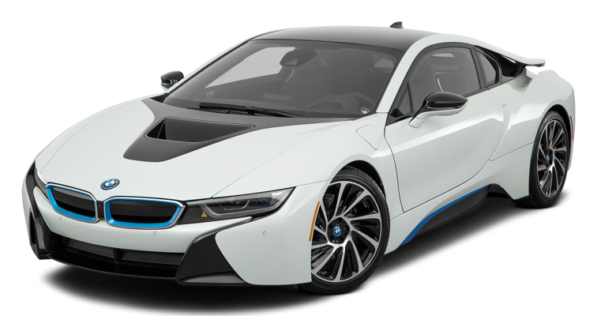
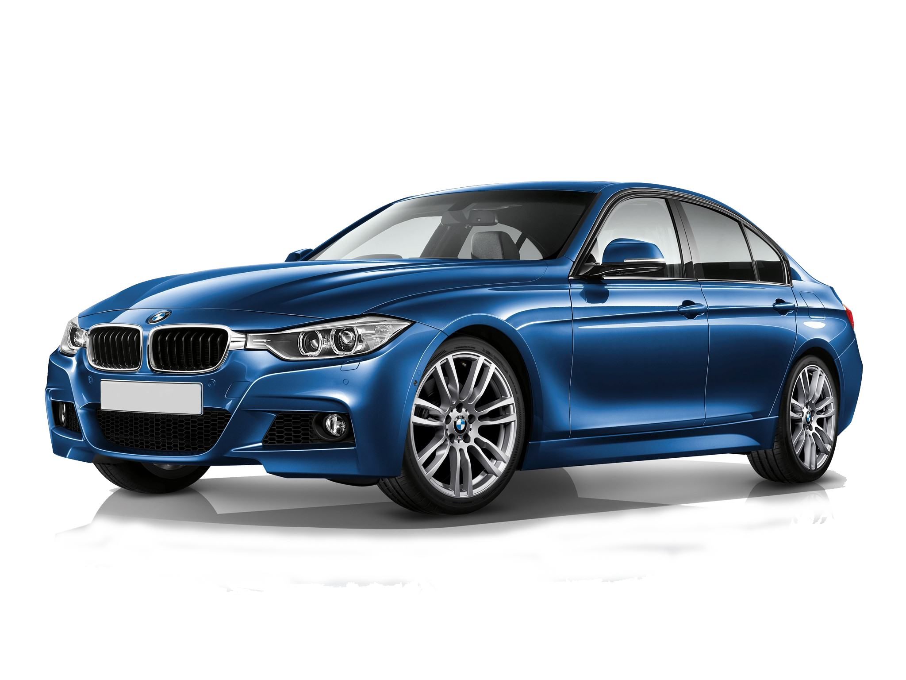
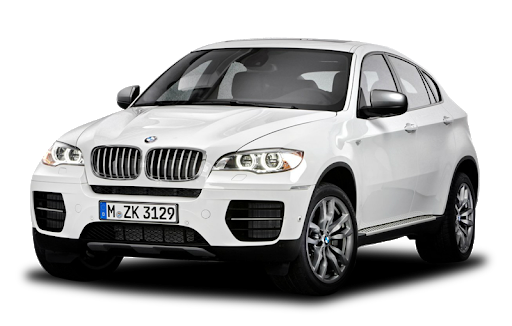

|

|
The BMW i8 is a plug-in hybrid sports car developed by BMW. The i8 is part of BMW's electrified fleet
and is marketed under the BMW i sub-brand. The production version of the BMW i8 was unveiled at the
2013 Frankfurt Motor Show, and was released in Germany in June 2014. Deliveries to retail
customers in the U.S. began in August 2014. A roadster variant was launched in May 2018.
Production ended in June 2020.
The 2015 BMW i8 accelerates from 0 to 100 km/h (62 mph) in 4.4 seconds and has an electronic
limited top speed of 250 km/h (155 mph). The 2015 model year i8 has a 7.1 kWh lithium-ion battery
pack that delivers an all-electric range of 37 km (23 mi) under the New European Driving Cycle.
Under the U.S. EPA cycle, the range in EV mode is 24 km (15 mi). The battery capacity of both,
BMW i8 Roadster and the i8 Coupé, was increased to 11.6 kWh in 2018, allowing the NEDC electric
range to rise to 55 km (34 mi) for the coupé and to 53 km (33 mi) for the roadster.
The BMW i8 coupé has a fuel efficiency of 2.1 L/100 km (134.5 mpg‑imp; 112.0 mpg‑US) under the NEDC
test with carbon emissions of 49 g/km. The EPA rated the i8 combined fuel economy at 76 MPGe (3.1 L
gasoline equivalent/100 km; 91 mpg-imp gasoline equivalent) and 29 miles per gallon (6.7L/100 km)
when running in pure gasoline mode.
By March 2020, global sales of all variants reached more than 20,000 units, making the BMW i8 the
world's top selling plug-in electric sports car, and exceeding sales of all competitors in its
segment combined.
|
|
The BMW 3 Series is a compact executive car manufactured by the German automaker BMW since May 1975.
It is the successor to the 02 Series and has been produced in seven different generations.
The first generation of the 3 Series was only available as a 2-door coupé; however, the model range
has since expanded to include a 4-door saloon, 2-door convertible, 2-door coupé, 5-door estate,
5-door liftback ("Gran Turismo") and 3-door hatchback body styles. Since 2013, the coupé and
convertible models have been marketed as the 4 Series; therefore, the 3 Series range no longer
includes these body styles.
The 3 Series is BMW's best-selling model, accounting for around 30% of the BMW brand's annual total
sales (excluding motorbikes). The BMW 3 Series has won numerous awards throughout its history.
The M version of the 3 series, M3, debuted with the E30 M3 in 1986.
|

|
|

|
The BMW X6 is a mid-size luxury crossover by German automaker BMW.
The first generation (E71) was released for sale in April 2008 for the 2008 model year. The X6 was
marketed as a sports activity coupé (SAC) by BMW. It combines the attributes of an SUV (high ground
clearance, all-wheel drive and all-weather ability, large wheels and tires) with the stance of a
coupé (styling featuring a sloping roof). It was based on the previous generation BMW 5 and 6
Series. E71 development began in 2003 under Peter Tuennermann, after start of E70 X5 development in
2001. Design work by E70 X5 designer Pierre Leclercq was frozen in 2005, with test mules being run
from the summer of 2005 and prototypes being tested from late 2006. Production began on December 3,
2007.
The second generation X6 (F16) was launched at the Paris Motor Show in 2014.
|